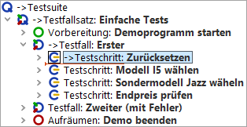
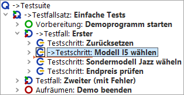
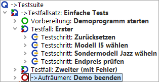

| Version 6.0.3 |
Nun wollen wir die Testfälle schrittweise ausführen.
Wie Sie sicher festgestellt haben werden, öffnet "Einzelschritt ausführen"  einen Knoten mit Kindern und
macht den ersten Kindknoten zum aktiven Knoten. Dies ist wie immer an der
Pfeilmarkierung des Knotens erkennbar.
einen Knoten mit Kindern und
macht den ersten Kindknoten zum aktiven Knoten. Dies ist wie immer an der
Pfeilmarkierung des Knotens erkennbar.
Wenn Sie an dem Punkt weitergemacht haben, an dem die Ausführung der Testsuite im letzten Abschnitt pausiert war, d.h. vom Knoten "Testfall: Erster" aus, so würde nun der Testfall geöffnet werden:
|
|  | ||
|
| Abbildung 23.4: Einzelschritt ausführen | ||
Im Falle eines Blattknotens, d.h. eines Knotens, der keine Kinder hat, ist die Wirkung die gleiche wie die der folgenden Funktion.
Mittels der Schaltfläche "Gesamten Knoten ausführen" wird ein Knoten inklusive aller Kindknoten ausgeführt. Der als nächstes auszuführende Knoten auf der gleichen Ebene wird dann der aktive und erhält den Pfeil.
|
|  | ||
|
| Abbildung 23.5: Gesamten Knoten ausführen | ||
"Bis Knotenende ausführen" führt die verbleibenden Geschwisterknoten aus und stoppt beim nächsten auszuführenden Knoten der übergeordneten Hierarchieebene.
|
|  | ||
|
| Abbildung 23.6: Bis Knotenende ausführen | ||
Im Beispiel ist dies der 'Aufräumen' Knoten. Wie bereits im ersten Kapitel Ein vollständiger Testlauf erläutert, haben 'Vorbereitung' und 'Aufräumen' Knoten die besondere Eigenschaft, dass sie vor und nach jedem Testfall ausgeführt werden, um so einen definierten Anfangszustand für jeden Testfall herzustellen.
Hinweis Dieses Verhalten tritt nur auf, wenn Sie die komplette Testsuite oder den Testfallsatz gestartet hatten und sich im Debug-Modus befinden. Wenn keine Testausführung aktiv war und Sie nur den Testfall selektiert hatten, so bewirkt die Funktion "Gesamten Knoten ausführen", dass der Testfall ausgeführt wird und dann der nächste Testfall selektiert wird.
Hinweis
Bitte beachten Sie bei der interaktiven Testerstellung bei Menüs und Comboboxen,
dass diese häufig zuklappen,
wenn die Applikation den Fokus verliert, was beim Wechsel in den Debug-Modus der Fall ist.
In diesem Fall empfiehlt es sich, den Knoten,
der ein Menü oder eine Combobox öffnet, und den Knoten, der die Auswahlaktion durchführt,
gemeinsam auszuführen, also nicht zwischendurch in den Debug-Modus zu gehen. Dies kann
man zum Beispiel dadurch erreichen, dass man nach dem Knoten, der die Auswahlaktion
durchführt, einen Haltepunkt
setzt und bei Erreichen des Knotens, der das Menü
oder die Combobox öffnet, die Testausführung durch Lösen der Pausetaste
 freigibt.
freigibt.
| Letzte Änderung: 6.9.2022 Copyright © 2002-2022 Quality First Software GmbH |